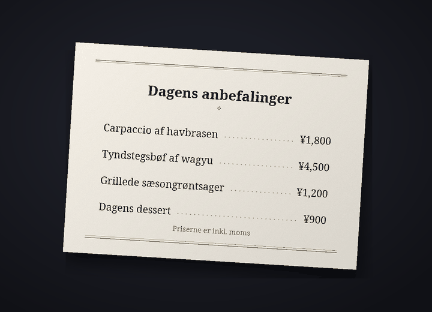

Oversættelsesbot til Discord-chat
Chat på Discord – hver på sit eget sprog
Cozirom er en Discord-bot, der oversætter chatten til den andens sprog. Når du har slået den til, bliver dine beskeder sendt oversat under dit eget navn og profilbillede, og tekst i billeder bliver også oversat.
Sådan starter duSe abonnementer
Oversættelserne laves af AI (Claude fra Anthropic). De kan være forkerte, så tjek originalen, når det er vigtigt.
Det kan botten
Én bot oversætter tekst, billeder og tale
Abonnementernes grænser tælles i oversættelser. En besked oversat til ét sprog tæller som 1.
6 funktioner
Antal oversættelser
Automatisk oversættelse
Én kørsel af
/oversæt tiler nok, så bliver dine beskeder på den server sendt på den andens sprog under dit eget navn og profilbillede. Originalen bliver stående med småt under oversættelsen, og knappen viser hele originalen.
viser hele originalen.Oversættelser1 pr. besked
Tekst i billeder
Menukort, spilskærme, memes: Har et billede tekst, bliver den læst og oversat. Åbn det fra ikonet
 under billeder fra dem, der har slået oversættelse til, eller via højreklik. Kun den, der spurgte, ser resultatet, og billeder uden tekst tælles ikke med.
under billeder fra dem, der har slået oversættelse til, eller via højreklik. Kun den, der spurgte, ser resultatet, og billeder uden tekst tælles ikke med.OversættelserNormalt omkring 9 pr. billede
Oversættelse på billedet
Med ikonet
 får du en kopi af billedet, hvor den oprindelige tekst er fjernet og oversættelsen tegnet i stedet. Først bruges “Som originalen”, der vælger en skrifttype tæt på de oprindelige bogstaver, og du kan skifte mellem op til 15 skrifttypepakker som “Serif”, “Håndskrift” og “Tegneserie”, uden at det tæller med. Det virker bedst på vandret tekst som skærmbilleder, memes, spilskærme og menukort, og kun den, der trykkede, ser resultatet.
får du en kopi af billedet, hvor den oprindelige tekst er fjernet og oversættelsen tegnet i stedet. Først bruges “Som originalen”, der vælger en skrifttype tæt på de oprindelige bogstaver, og du kan skifte mellem op til 15 skrifttypepakker som “Serif”, “Håndskrift” og “Tegneserie”, uden at det tæller med. Det virker bedst på vandret tekst som skærmbilleder, memes, spilskærme og menukort, og kun den, der trykkede, ser resultatet.OversættelserNormalt omkring 19 pr. billede


Eksempel: det oprindelige billede (et japansk menukort) og det samme billede med teksten fjernet og den danske oversættelse tegnet i stedet med skrifttypen “Serif”. Talebeskeder
Højreklik på en talebesked, der er sendt fra mobilappen, for at se, hvad der blev sagt, og oversættelsen. Beskeder på op til 3 minutter bliver transskriberet, og beskeder uden tale tælles ikke med.
Oversættelser1 pr. sekund plus oversættelsenEn besked på 10 sekunder giver normalt 11
Fire toner
Slang, afslappet, venlig eller formel – du vælger for hver server. Afslappet med venner, formel på nye steder. På Guest-abonnementet (gratis) får du alle fire de første 14 dage og derefter den venlige tone.
OversættelserBetalte: alle fire. Free: de første 14 dage
31 sprog
Botten oversætter 31 sprog. Bottens tekster og kommandonavne findes på 30 af Discords sprog, så den anden person kan sætte den op på sit eget sprog.
Oversættelser31 til oversættelse, 30 visningssprog

Sådan kommer du i gang
Tre trin til oversatte beskeder under dit navn
Tilføj botten til serveren
En serveradministrator tilføjer botten til serveren. Bed om invitationslinket på supportserveren.
Slå oversættelse til
På serveren kører alle, der vil oversættes,
/oversæt til. Botten gætter dit og den andens sprog og åbner indstillingspanelet. Ret dem i rullemenuerne, hvis de ikke passer.Skriv, som du plejer
Skriv, som du plejer, så vises oversættelsen under dit navn. Start på Guest-abonnementet (gratis), og skift abonnement på abonnementssiden, når du har brug for mere.
Privatliv
Beskeder, der skal oversættes, og billeder sendes kun til Anthropic (USA), og lyden fra talebeskeder sendes kun til Google (USA). Botten gemmer originalen til en sendt oversættelse i 14 dage og cachelagrede oversættelser i 30 dage, og den gemmer ikke billeder, lyd eller den tekst, der er læst fra dem. Chatindhold havner aldrig i logfiler, og /oversæt slet-mine-data sletter dine data når som helst.